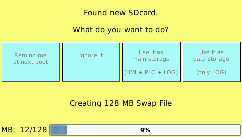

On panels TPAC1007_04 it is possible to insert a micro SD card up to 64 GB (ext3 or FAT format and only partition). First time the following windows appears:
It is possible to choose 4 modes:
Remind me at next boot: this windows appears again next boot;
Ignore it: ignore and don’t show again and mount sd card;
Use it as main storage (HMI+PLC+LOG): card is used to store the HMI, PLC application with LOGS. Only with SD card formatted in ext3.
WARNING: if card is removed, the application is not present on panel any more. If card is moved on another panel (same model), it starts with application in SD card.
Use it as data storages (only LOG): card is used only for LOGS. Maximum size 4GB.
In the last two cases, only if the SD card has been formatted in ext3 format, it is also possible to create a swap file to increase the available RAM memory.
You need to check the "create memory swap file" checkbox and the size of the desired area (16/32/64/128/256 MB).
The proposed choice is 128MB, equal to the RAM present on the card.
After selecting the type of use desired, if this option is checked, the preparation of the Swap area will start.

This can take a long time (about 12 minutes for 128MB) and will only be done once.
The use of RAM memory and swap area can be checked with the command "free" from the terminal.